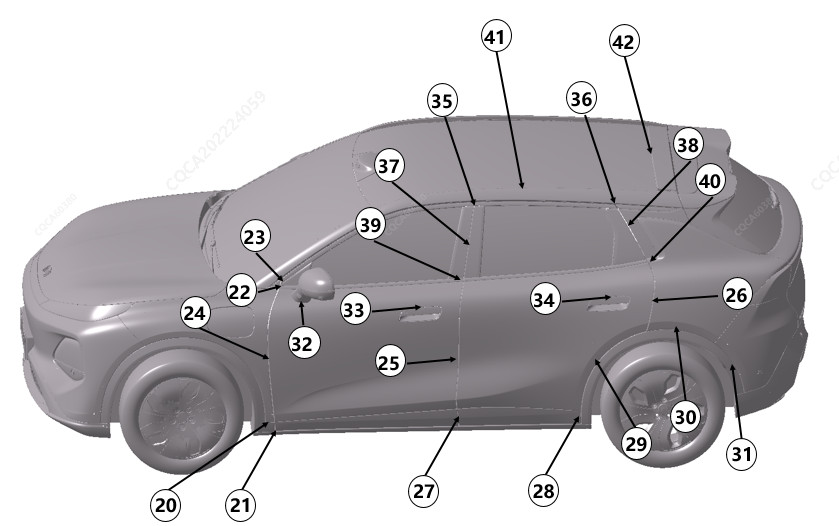

|
位置 |
详细说明 |
允许间隙尺寸（mm） |
允许段差尺寸（mm） |
|---|---|---|---|
|
20 |
翼子板相对于前轮眉 |
0～1.0 |
/ |
|
21 |
前轮眉相对于前门下护板 |
2.5~5.5，P≤1.5 |
-1.8~1.8 |
|
22 |
前门水切相对于前三角盖板 |
2.5~5.5 |
-1.2~1.2 |
|
23 |
前门窗框亮条相当于前三角盖板 |
2.5~5.5 |
/ |
|
24 |
翼子板相对于前门 |
2.9~4.5，P≤0.8 |
-0.5~1.0，P≤0.8 |
|
25 |
前门相对于后门 |
2.9~4.5，P≤0.8 |
-0.5~1.0，P≤0.8 |
|
26 |
后门相对于侧围 |
2.9~4.5，P≤0.8 |
-0.5~1.0，P≤0.8 |
|
27 |
前门下护板相对于后门下护板 |
3.5~6.5，P≤1.5 |
-1.8~1.8 |
|
28 |
后轮眉相对于后门护板 |
2.5~5.5，P≤1.5 |
-1.8~1.8 |
|
29 |
后门相对于后轮眉 |
2.5~4.9，P≤1.5 |
/ |
|
30 |
后轮眉相对于侧围 |
0~1.0 |
/ |
|
31 |
后轮眉相对于后保 |
0~1.0 |
/ |
|
32 |
后视镜相对于前门外板 |
0~1.0 |
/ |
|
33 |
前门把手相对于前门 |
1.5~2.9，P≤1.2 |
-1.3~0.3 |
|
34 |
后门把手相对于后门 |
1.5~2.9，P≤1.2 |
-1.3~0.3 |
|
35 |
前门窗框亮条相对于后门窗框亮条 |
2.5~5.5 |
-1.0～1.5 |
|
36 |
后门窗框亮条相对于侧围装饰件 |
2.5~5.5 |
-1.0~1.5 |
|
37 |
前门框相对于后门框 |
2.5~5.5，P≤1.5 |
-1.0~1.5，P≤1.5 |
|
38 |
后门窗框后装饰件相对于侧围装饰件 |
2.5~5.5，P≤1.5 |
-1.0~1.5，P≤1.5 |
|
39 |
前门外夹条相对于后门外夹条 |
2.5~5.5 |
-1.0~1.5 |
|
40 |
后门外夹条相对于侧围装饰件 |
2.5~5.5 |
-1.0~1.5 |
|
41 |
天幕相对与侧围 |
2.5~5.5 |
/ |
|
42 |
天幕相对于顶盖 |
2.0~5.0 |
/ |
